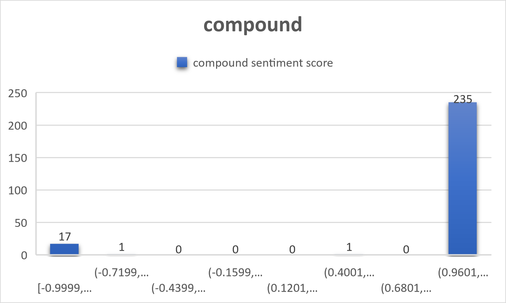

In this project, we will be focusing on Reddit and gender. With sentiment analysis and data visualizations, our findings will demonstrate the relationship between subreddit demographic and activity.
r/ForeverAlone is a subreddit for Forever Alone Folks. It has 166k members and was created on September 15, 2010. The 9 rules of this subreddit are:
The Sentiment Analaysis data collected comes from the Google Coarse-Discourse github page.
Using the raw data, we collected the text and subreddit headings from the joined JSON file and created plain text files with this information.
Next we used the nltk VADER package to run sentiment analysis on all of the collected subreddit threads in an attempt to determine if overall, reddit
is a supportive environment.

This visualization shows data from the 255 subreddit threads which had the most textual data. The data demonstrates that
reddit contains much higher levels of positive sentiment than negative. This may be surprising given the perception that
places like reddit, 4chan, and 8chan (popular anonymous forum websites) have become breeding grounds for certain hate groups.
However, we believe that the evidence here suggests that many more people use reddit as a site to seek support and help.
Even comparing this data to the subreddit r/ForeverAlone suggests that people are searching for solidarity and support.
When users come together to voice their complaints and pains, they find solace in the fact that others can hear them and relate
to them. We previously noted that some reddit posters in r/ForeverAlone would voice the fact that they don't want help,
but the fact that they are frequenting this subreddit suggests that it may in itself be a form of help. After all, being heard
is sometimes all a person wants, and an anonymous forum such as reddit provides a perfect environment for that.